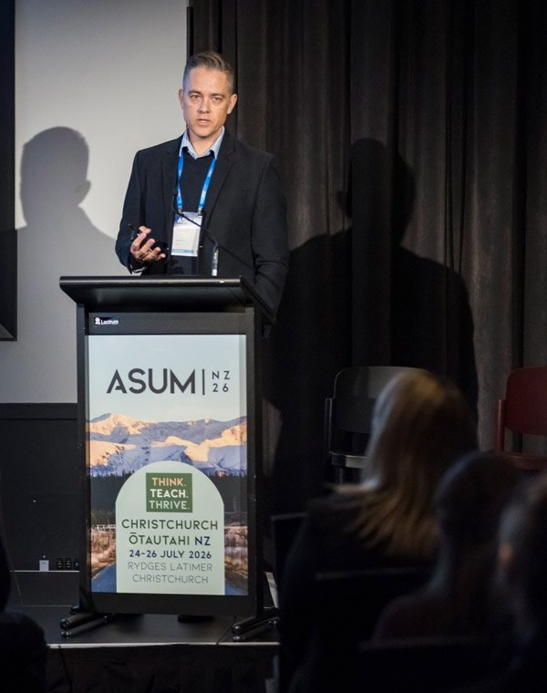

Tue 20 Oct 2026, 6:30 to 7:50pm AEST
Paediatric acute abdomen and appendicitis
Webinar hosted by Canon Medical ANZ.
Clinical and academic work on diagnostic ultrasound for children, with a focus on regional and First Nations access, patient safety and the sonographer workforce. Current roles and affiliations are on LinkedIn.

Webinar hosted by Canon Medical ANZ.
Talk at the 8th Annual Echo Supervisor Summit.
Themes, selected publications and one case study from evidence to practice.
Read moreAwards, grants, editorial and professional service.
Read moreWorkshops and lectures at regional sites, with local workforce and First Nations context.
Read moreUpcoming and past talks, keynotes and webinars.
Read morePostgraduate teaching, academic work, and first-time authors I have supported to publish.
Read moreI welcome enquiries from colleagues, students, and collaborators regarding research, clinical education, or professional matters.
Please select a contact reason. This helps me respond promptly and keeps irrelevant messages to a minimum. Submissions without a relevant purpose may not receive a reply.